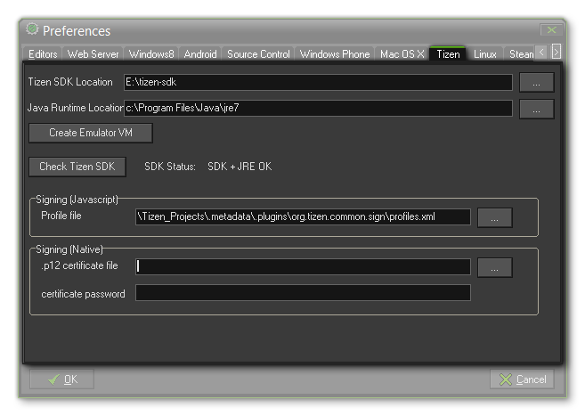

The first thing to do before starting to test or create a Tizen game, is to set up this section of the preferences for the Tizen module. You must have the Tizen SDK installed (see the page on
Installation) which you would then "point" to from the file dialogue labelled Tizen SDK Location. Apart from the SDK you will
also need to link to the Java Runtime Location as the Tizen SDK requires this.
Once you have located the necessary files, you should proceed to Check the Tizen SDK by pressing the appropriate button on this tab, as this will get GameMaker:Studio to check that
the components are installed and communicating with the program properly. If this shows "SDK + JRE OK" then you can begin to test your games on the Tizen target platform.
If your development setup permits the creation of a virtual Tizen device, you should also press the Create Emulator VM to initialise the Tizen emulator and create a "template" of the
GameMaker:Studio virtual Tizen device, otherwise your game will not run correctly (if at all).
Finally, you can add the signing certificate that the Tizen SDK generates. This is not necessary for testing the JS (Web) Tizen module or even for creating a final *.wgt file, but without it your game
will not be accepted onto the official Tizen Store. If you are compiling to the Native module, then the *.p12 file is essential as without it your game will not compile. Further information on setting
up the Tizen module and aquiring the necessary files can be found on the YoYo Games Wiki.